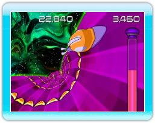

Bienvenue dans Snail Mail, le jeu de course pour WiiWare.
Votre
objectif en tant que Turbo l'escargot (Turbo the Snail) est de
recueillir du courrier intergalactique en naviguant sur des parcours de
distribution de plus en plus difficiles.
Plus
vous progresserez et plus les parcours de distribution se
compliqueront. Ils deviendront plus élaborés grâce à des zigzags, des
virages, des creux, des trous, des chutes, des sauts et des spirales.
Vous rencontrerez également plus d'obstacles, comme des limaces, du
sel, des astéroïdes et des tourelles.
Armes
Afin
de pouvoir détruire les astéroïdes qui lui bloquent la voie, Turbo est
équipé d'un fusil blaster à pulsation (Pulse Blaster) standard, mais il
lui est possible de le mettre à niveau en sautant dans les anneaux
blancs que vous retrouverez dans chaque piste. Les mises à niveau des
armes améliorent la vitesse de tir et la capacité à atteindre la cible
du fusil blaster. Par ailleurs, d'autres mises à niveau permettent à
Turbo de détruire les limaces ou de devenir invincibles. La section «
Mises à niveau des armes » (Weapons Upgrades) explique les différentes
mises à niveau possibles.
Modes de jeu
Il
existe cinq modes de jeu dans Snail Mail : Aventure (Adventure),
Aventure en coopération (Co-Op Adventure), Course contre la montre
(Time Trial), Mode défi (Challenge Mode) et Multijoueur (Multiplayer)
(jusqu'à quatre joueurs). La section « Modes de jeu » (Playing Modes)
explique les modes de jeu.
Tutoriel
Si
vous souhaitez apprendre comment naviguer Turbo, éviter des obstacles,
détruire des ennemis et obtenir des bonus, vous avez la possibilité de
jouer au bref tutoriel qui se trouve dans le menu principal (Main Menu).
Commandes
Il
est possible de jouer à Snail Mail à l'aide d'une Wii Remote ou d'un
Wii Wheel. Lorsque vous jouez avec une Wii Remote, tournez la Wii
Remote pour effectuer un virage et appuyez sur le bouton A pour faire
feu. Lorsque vous jouez avec un Wii Wheel, tournez normalement pour
effectuer un virage et appuyez sur le bouton 2 pour faire feu. Il vous
est possible de faire feu de manière continue en maintenant les boutons
de tir enfoncés.